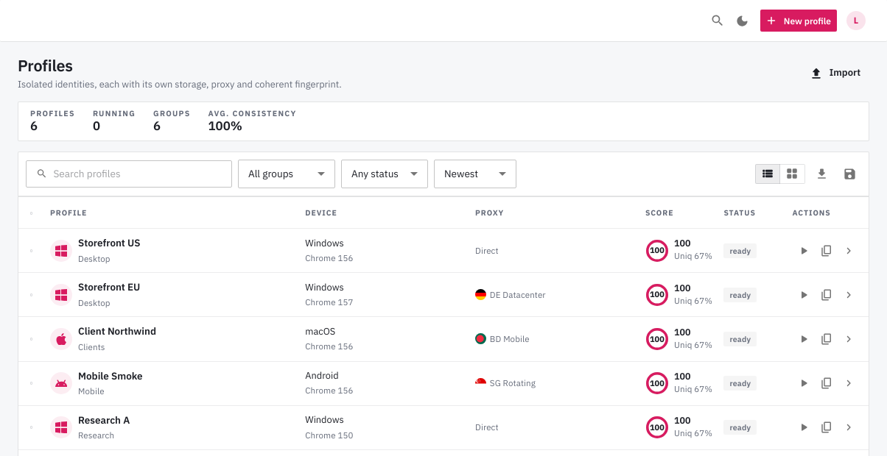
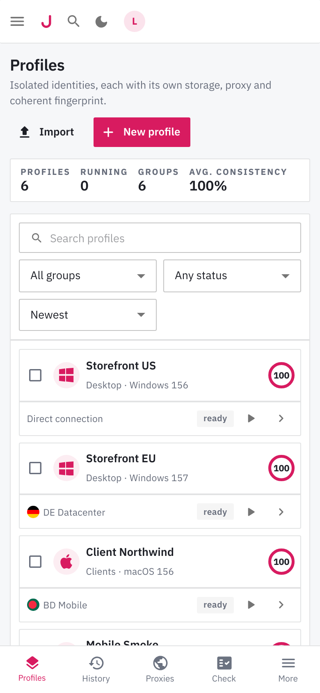
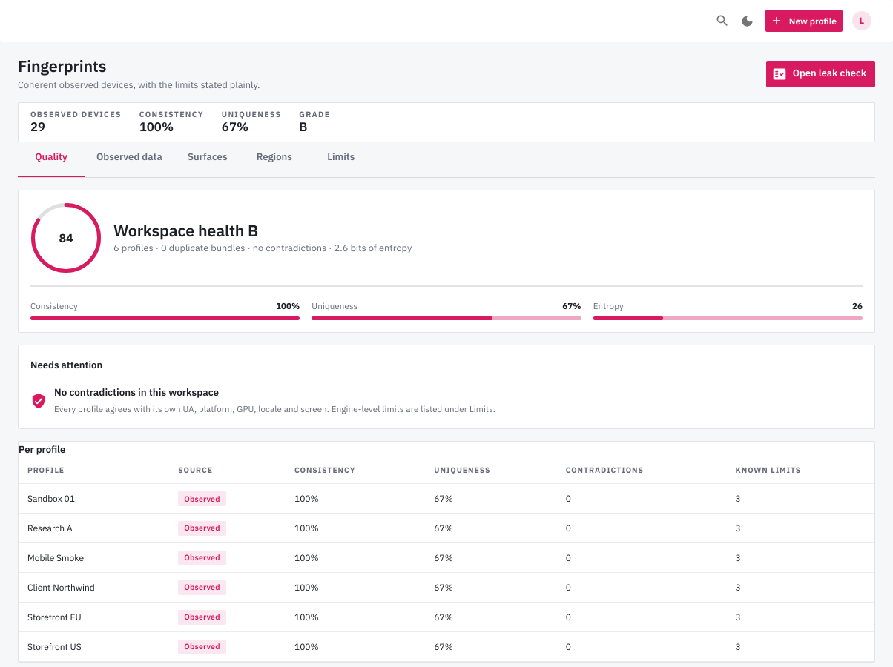
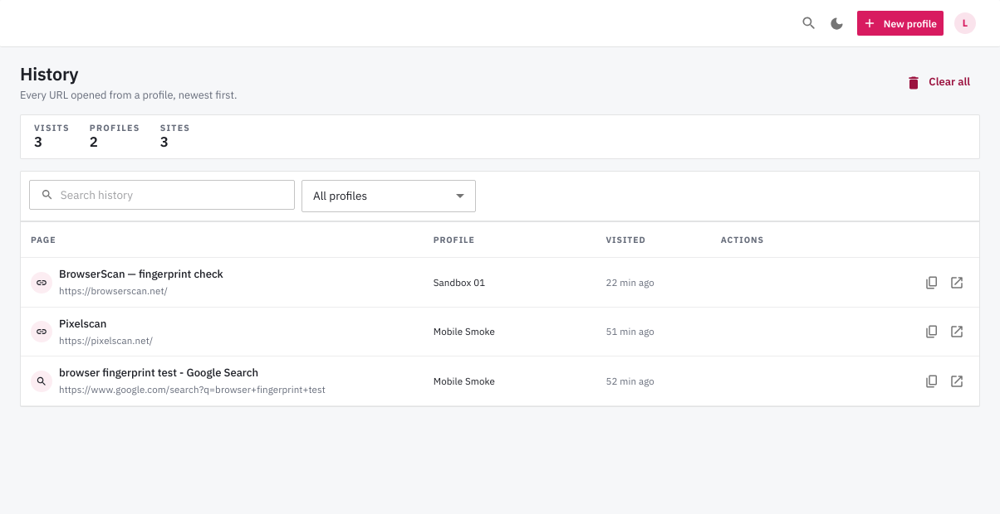
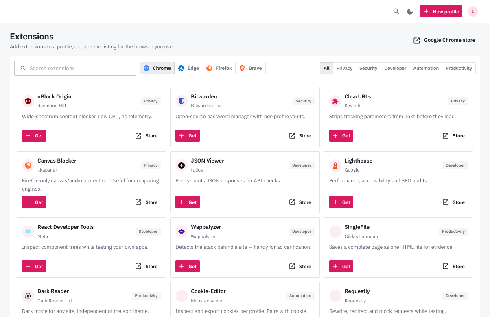
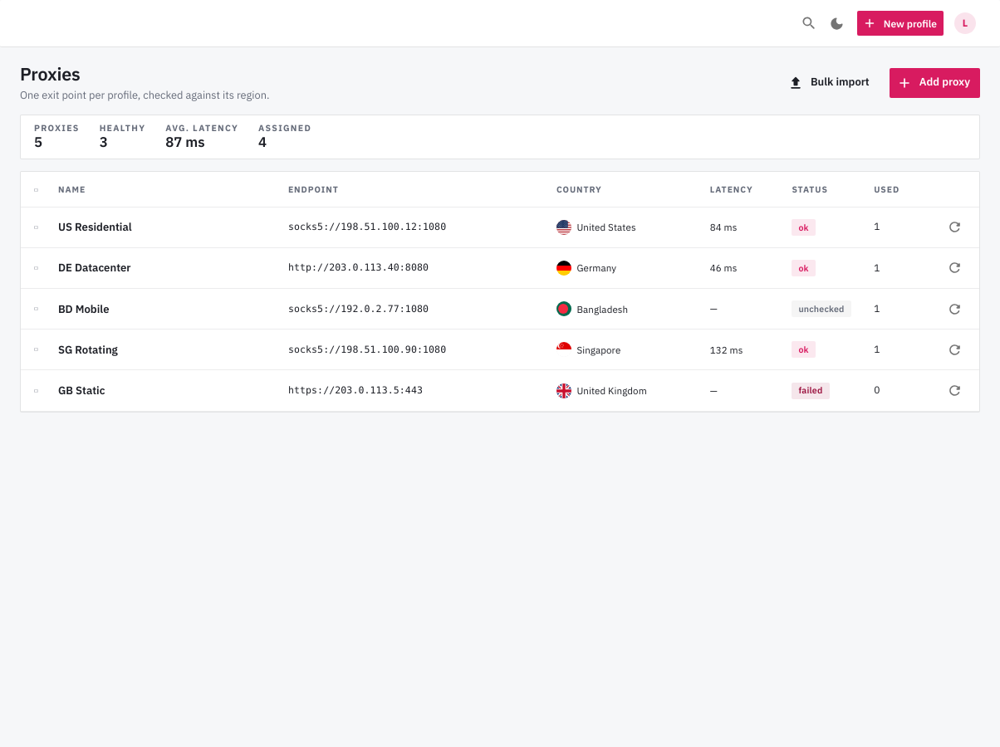
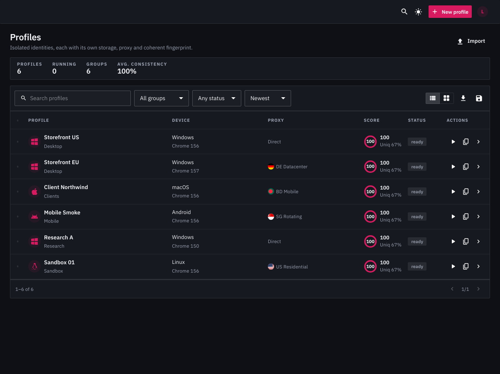

Bundled engines
Joe Browser, Chrome, Edge, Brave and Firefox engines ship inside the app. Nothing is borrowed from the machine.
Separate cookies and storage, one coherent device fingerprint and its own proxy per profile — with the engine bundled, so nothing depends on what is installed on the machine.


Joe Browser, Chrome, Edge, Brave and Firefox engines ship inside the app. Nothing is borrowed from the machine.
User agent, Client Hints, GPU, screen, fonts, memory, locale and touch are drawn from one observed device.

Assign an exit, match timezone and locale to its country, and get an alert when it drops or rotates.
Run the exact payload in a sandboxed frame and see all 22 checks before a profile is launched.
Supabase Realtime carries commands between desktop and Android; state stays scoped by row-level security.
One scroll container, a command palette on Ctrl K and a layout that holds from 360 px to 1440 px.
No mockups and no staged data.





Lifetime
Subscription
Honest scope. Joe Browser does not ship a patched Chromium or Firefox kernel, and it does not claim to be undetectable. TLS/JA4, HTTP/2 framing, font rasterisation, GPU driver behaviour and CDP side channels come from the engine underneath. Independent detectors also weigh network reputation, which no JavaScript layer controls. The validation report lists the checks that can actually be run.
Two with lifetime access on the free tier. Premium removes the cap and unlocks the Brave, Edge and Firefox engines; existing profiles are never removed.
No. Engines ship inside the app, and a profile is launched from that bundled engine only.
No. It means the local static checks and the injected payload agree. Detector outcomes also depend on proxy reputation and engine-level surfaces.
browserscan.net by default, so a fresh profile can be checked immediately. The start page is editable per profile.